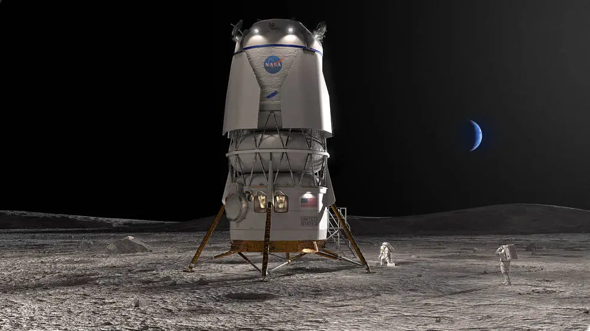

4. Rovers & Landers 🚜


Rovers and landers play crucial roles in planetary exploration by collecting soil samples, analyzing atmospheric conditions, and capturing images.
Moon Missions
- Apollo Lunar Modules: Carried astronauts to the Moon during the Apollo missions.
- Lunokhod Rovers: Soviet robotic rovers that explored the Moon in the 1970s.
- Chandrayaan-3: India’s latest lunar exploration mission, successfully landing in 2023.
Mars Rovers
- Curiosity: Studying Mars' climate and geology since 2012.
- Perseverance & Ingenuity: Exploring signs of ancient life and testing aerial flight on Mars.